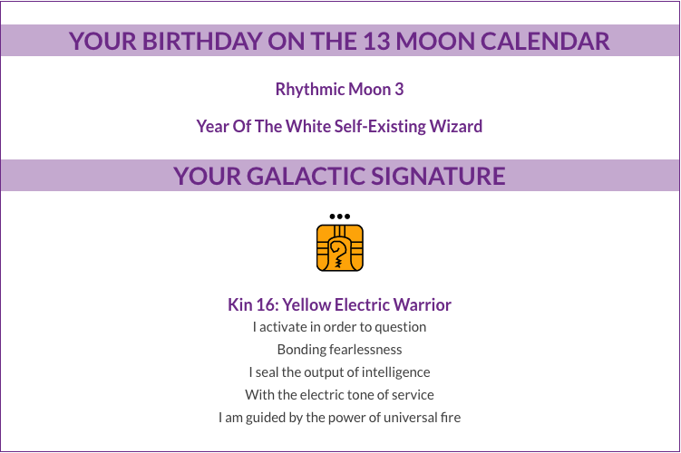
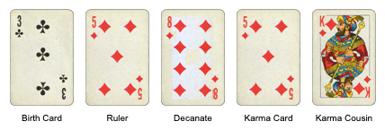

Claudine - 12.15.1983 - 18:27 - El Paso, Texas
Galactic Signature - Kin 16: Yellow Electric Warrior
The day you were born on the 13 Moon calendar is coded by your Galactic Signature. Your Galactic Signature is one of the 260 possibilities encoded in the Tzolkin/Harmonic Module.
By playing the role of your galactic signature, your allow yourself – your mind, body and spirit – to vibrate to that particular frequency and you broadcast it out to everyone around you. This is your gift to the world.
Learn more at Law of Time - 13 Moon Tutorial___________________________________________________
Birth Card - Three (3) of Clubs
Qualities of the Birth Card are modified by astrological influences of planets associated with the Sun position at the moment we are born. If you are born on December 15, 1983, the planetary ruler for your astrological sign (Sagittarius) is Jupiter. Your Sun is positioned approximately in the Third decan of Sagittarius, ruled by Sun. Find out the exact degree of your Sun placement to make sure your Planetary and Decanate cards are correct.
All Threes inhibit the creative drive that seeks expression. Number 3 departures from the Number 2 - the source of balance and harmony, and so it's always looking to find this balance in creating something new. There is an urge in self-expression and variety. The prime concern is more likely to pertain in the realm of ideas and mentality.
All Clubs trust their mental attitudes. They do have an inner knowledge; the question is either they are using it or not. Three Of Clubs are enthusiastically interested in everything and everyone. When it comes to making a choice - in work, in play, and especially in love, it doesn't come quickly. The most prominent challenge for Three of Clubs is faith, and if self-discipline isn't intact, it is difficult to open an excellent mental potential hidden inside this card. In choosing a carrier, Three of Clubs must remember, that they can't tolerate being chained to a desk or routine. A job requiring travel, change and opportunity to experience a wide variety of experiences will help to express their creative, artistic nature.
Three of Clubs have a considerable amount of personal magnetism. But while it suggests that Three of Clubs inclined to be popular, love is likely to be the series of successes and disappointments. If they want to examine their emotional needs seriously, Three of Clubs must first make a decision what they want in the way of love and friendship. They are usually generous and trusting and might find their romantic involvement expensive. Happiness in love is not an impossible dream, and they need to apply self-knowledge and personal discipline to achieve the state of "universal love," proposed by their birthday.
Three of Clubs' success in business may relate to travel and foreign countries. They don't like to own any debts and usually deal honestly and responsibly. They can be very successful financially at times, but it is always difficult to say how long. The power to make money is in their hands if the right positive mental attitude is maintained.
Three of Clubs make good directors of men. They might be indecisive in their lives, but they are not afraid to take responsibility for others. They can work successfully in real estate or building, or any occupation that involves their communication skills.
Three of Clubs benefit highly from spiritual development. Those who overcome their religious skepticism, and become aware of their intuitive gifts and their inheritance of knowledge - they find security and abandon the doubting part of their personality.
Learn more about your full Destiny Spread at Seven Reflections - Three of Clubs Birth Card___________________________________________________